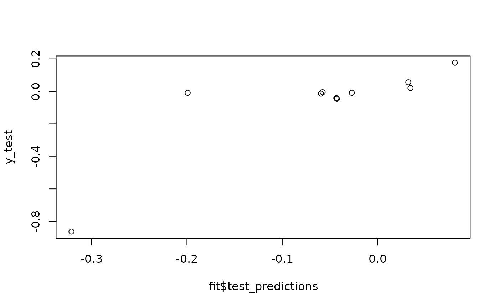

Gaussian Process Fitting to Test Data Using Multiple Kernels with Tuned Hyperparameters
Source:R/gaussian_processes.R
fit_gpr_multiple.RdThis is the counterpart to fit_gpr when multiple squared-distance matrices are available. A kernel is then built as a linear combination of base Gaussian RBF kernels. The hyperparameters are tuned by minimising the model's negative marginal log-likelihood on the training data.
Usage
fit_gpr_multiple(
D2_list,
training_idx,
test_idx,
y_train,
y_test = NULL,
centre = TRUE,
use_gradient = TRUE,
runs = 10,
verbose = TRUE
)Arguments
- D2_list
A list of matrices containing squared pairwise distances between all objects.
- training_idx
A vector with the row (and column) numbers corresponding to the training entries in
D2.- test_idx
A vector with the row (and column) numbers corresponding to the test entries in
D2.- y_train
A vector with the training outcomes.
- y_test
Optionally, a vector with the test outcomes.
- centre
If
TRUE, the training outcomes are centred around their mean before fitting the model. The mean is then added back to the predictions at the end.- use_gradient
If
TRUE, closed-form expressions for the RBF's gradient are used. Else, the optimiser uses the finite-differences method.- runs
Number of independent attempts to find a minimum when optimising the hyperparameters.
- verbose
If
TRUE, progress is shown on the console.
Value
A list containing the predictions for the test objects, the root mean squared error (if the true test outcomes are provided), and the tuned hyperparameter values.
Examples
N1 <- 25
N2 <- 10
x_train1 <- runif(N1, -pi, pi)
x_train2 <- runif(N1, 0, 1)
x_test1 <- runif(N2, -pi, pi)
x_test2 <- runif(N2, 0, 1)
y_train <- x_train2 * plogis(x_train1) * cos(x_train1)
y_test <- x_test2 * plogis(x_test1) * cos(x_test1)
D2_1 <- outer(c(x_train1, x_test1), c(x_train1, x_test1), "-")^2
D2_2 <- outer(c(x_train2, x_test2), c(x_train2, x_test2), "-")^2
fit <- fit_gpr_multiple(list(D2_1, D2_2), seq_len(N1), N1 + seq_len(N2), y_train, y_test, runs = 50)
#> Hyperparameter search 1 of 50.
#> Optimum set at -8.18636.
#> Hyperparameter search 2 of 50.
#> Current optimum improved from -8.18636 to -17.4587811.
#> Hyperparameter search 3 of 50.
#> Hyperparameter search 4 of 50.
#> Hyperparameter search 5 of 50.
#> Hyperparameter search 6 of 50.
#> Hyperparameter search 7 of 50.
#> Hyperparameter search 8 of 50.
#> Hyperparameter search 9 of 50.
#> Hyperparameter search 10 of 50.
#> Hyperparameter search 11 of 50.
#> Hyperparameter search 12 of 50.
#> Current optimum improved from -17.4587811 to -17.458826.
#> Hyperparameter search 13 of 50.
#> Hyperparameter search 14 of 50.
#> Hyperparameter search 15 of 50.
#> Hyperparameter search 16 of 50.
#> Hyperparameter search 17 of 50.
#> Hyperparameter search 18 of 50.
#> Hyperparameter search 19 of 50.
#> Current optimum improved from -17.458826 to -17.8169383.
#> Hyperparameter search 20 of 50.
#> Hyperparameter search 21 of 50.
#> Hyperparameter search 22 of 50.
#> Hyperparameter search 23 of 50.
#> Hyperparameter search 24 of 50.
#> Hyperparameter search 25 of 50.
#> Hyperparameter search 26 of 50.
#> Hyperparameter search 27 of 50.
#> Hyperparameter search 28 of 50.
#> Hyperparameter search 29 of 50.
#> Hyperparameter search 30 of 50.
#> Hyperparameter search 31 of 50.
#> Hyperparameter search 32 of 50.
#> Hyperparameter search 33 of 50.
#> Hyperparameter search 34 of 50.
#> Hyperparameter search 35 of 50.
#> Hyperparameter search 36 of 50.
#> Hyperparameter search 37 of 50.
#> Hyperparameter search 38 of 50.
#> Hyperparameter search 39 of 50.
#> Hyperparameter search 40 of 50.
#> Hyperparameter search 41 of 50.
#> Hyperparameter search 42 of 50.
#> Hyperparameter search 43 of 50.
#> Hyperparameter search 44 of 50.
#> Hyperparameter search 45 of 50.
#> Hyperparameter search 46 of 50.
#> Hyperparameter search 47 of 50.
#> Hyperparameter search 48 of 50.
#> Hyperparameter search 49 of 50.
#> Hyperparameter search 50 of 50.
plot(fit$test_predictions, y_test)

fit$RMSE
#> [1] 0.1857276